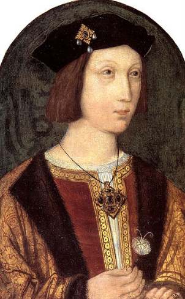
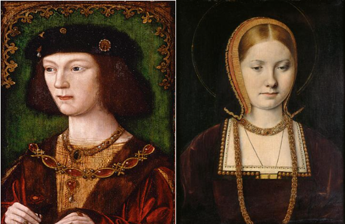
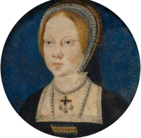
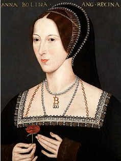
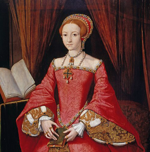

Katherine of Aragon: 1485 - 1536

Childhood: 1485 - 1501
Birth: December 16th, 1485 in Archepiscopal Palace of Alcalá de Henares near Madrid, Spain.
Parents: King Ferdinand II of Aragon and Queen Isabella I of Castile (seperate kingdoms making up the whole of modern day Spain). They would sponsor Colombus's 1492 voyage to discover America.
Education: She was tutored in arithmetic, canon and civil law, classical literature, history, philosophy, religion, and theology (Catholicism). She was taught to speak, read and write in Castilian Spanish, Latin, French and Greek.

First Marriage to Arthur Prince of Wales: 1501 - 2
March 27th, 1489: Treaty of Medina del Campo signed between Spain and England, where she would be married to the heir to the British throne, Arthur, Prince of Wales, when they were both 15 (the marriageable age at the time). As per the custom at the time, royals from one country in Europe, were usually married to royals from another country in Europe, in order to establish a political alliance between the countries.
November 4th, 1501: Katherine, arrives in England and meets Arthur for the first time.

November 14th, 1501: Katherine and Arthur, now both 15, are married at St. Paul's Cathedral in London.
Life during first marriage: The newlyweds moved into Ludlow Castle on the border of Wales. There Arthur took up his royal duty as Prince of Wales to preside over the administrative council of Wales and the Marshes, thus effectively governing Wales.

Death of Arthur: In March 1502, Katherine and Arthur both become sick. The type of sickness is unknown but is suggested to be either the plague, TB, the flu, or the Medieval disease of the sweating sickness. Katherine recovered, but Arthur unfortunately didn't and died on April 2nd, 1502. He was 15, Katherine, 16.
Widowhood: 1502 - 9
June 1503: After much negotiations with Katherine's parents, Henry VII agrees to a treaty with them where Katherine is now to marry the younger Henry in 1505 when he is 14 (of marriagable age in the 1500s as Katherine was older - 16, as she was originally married to his older brother) in order to preserve the alliance. Katherine is to stay in England until then, not returing home to Spain. As per the religious tradition of the time, as Arthur and Henry are brothers, Katherine cannot marry Henry, as they are within a forbidden degree of affinity for re-marriages. This was solved with a papal dispensation allowing them to marry obtained by Henry VII, doubtless with the help of some financial incentives.
1505: Henry now 14, is told by his father to wait to marry Katherine, as her father has not paid the agreed upon dowry, so Henry VII was now looking for better potential matches for his son.
Second Marriage to Henry VIII: 1509 - 1533
April 22nd, 1509: Henry VII dies, and his son Henry becomes Henry VIII at 17. His paternal grandmother: Lady Margaret Beaufort, is made regent until Henry's 18th birthday two months later. She died the day after his birthday.
June 11th, 1509: Despite his father's wishes, Henry and Katherine had always been affectionate to and cared about each other, so he decides to marry her, making her Queen of England.
June 24th, 1509: Joint corronation of Henry and Katherine at Westminster Abbey.

January 1st, 1511: Katherine gives birth to a son: Henry. He dies on February 22nd, when his parents are still hosting jousting tournaments and parties celebrating his birth. Katherine would go on to have stillborn children after this in 1513, 1514, and 1518, and one before this in 1510.
February 18th, 1516: Birth of Katherine and Henry's only surviving child: Mary - later Queen Mary I.

Life as Queen of England: Katherine passed her time as Queen in the expected way: going on progresses with Henry throughout England, so her people could see her. She also presided over jousting tournaments with Henry, took part in banquets, balls, masquerades, and received foreign dignitaries. She was also very religious, and would devote her time to Catholic religious observances. All in all, she was a popular figure and much loved by her people. She would elect much sympathy from them later, when Henry was trying to divorce her and marry Anne Boleyn.
Spring 1526: Henry starts an affair with Lady Anne Boleyn. She is the younger sister of his former mistress Mary Boleyn, and also a lady in waiting to Katherine. Henry was attracted to her, due to her intelligence, wit, love of art and music, and fashion sense. He asked her to be his only mistress and she refused, asking to be his wife instead.

1527-8: As Henry's desire to marry Anne and their affair is made public, the court starts paying tribute to her, and Katherine is left out. Henry uses the excuse that the Pope had no legal basis to give him a dispensation to allow him to marry Katherine, as she was his brother's widow. Henry says that as there is a biblical passage against that, the pope had no authority to contravene it.
May 31st - July 23rd 1529: Henry is able to get the Pope to send a papal legate to London to try his divorce case based on his claim that the Pope wasn't allowed to issue the dispensation. The legate: Cardinal Campeggio sets up a tribunal and listens to both sides of the argument. However, he is instructed by the Pope to recall the trial back to Rome, as Campeggio says that it can only be heard by the Pope. The reason for this is the Pope was under pressure from Holy Roman Emperor and King of Spain Charles V, also Katherine's nephew, not to allow the divorce to proceed.

February 7th, 1531: Henry, tired of waiting for the Pope's decision, and fearing that it will be against him, decides to take matters into his own hands. He calls the British clergy into the halls of Parliament and asks them to acknowledge him as the supreme head of the Church of England, refusing the Pope any authority over the English church. They grant him this on 11th.
July 14th, 1531: Henry banishes Katherine from court and sends her to live in his lesser castles. He is now seen at all court/social events with Anne Boleyn and not Katherine.
August 22, 1532: Archishop Warham of Canterbury, the head of the English church and a religious conservative, dies, as is replaced by Henry with Thomas Cramner, a liberal cleric who supports and can grant the King's divorce.

September 1st, 1532: Henry now makes Anne Marquess of Pembroke, giving her a higher noble rank, so when he marries her, it would be considered a marriage of royalty and someone of an acceptable (high) noble rank.
January 25, 1533: Anne realizes that she is pregnant, and that is used as a reason to conduct a secret wedding between her and Henry. Accoring to the law about royal succession (it still applies to the royal family today), all royal children must be conceived in wedlock to be able to succeed to the throne; that's why the marriage was kept a secret.
April 9th, 1533: Katherine is informed by Henry's messengers that she is no longer Queen, and can only call herself Dowager Princess of Wales (as she was Arthur's widow).
April 12th, 1533: Anne now appears in court as Queen and on the next day, Easter, she is publicly declared Queen in all the churches in England.

May 23rd, 1533: Cranmer after convening an ecclesistical court, declares Henry's marriage to Katherine "null and void", due to Henry's original argument that the Pope didn't have the authority to grant the dispensation allowing Henry to marry Katherine after she had previously married his brother.
May 28th, 1533: Cranmer now pronounces Henry's marriage to Anne as "good and valid" legitimizing her position as Queen, and her soon to be child with Henry would now be considered legitimate and as a heir to the throne.
June 1st, 1533: Anne is crowned Queen of England.
September 7th, 1533: Birth of Henry and Anne's daughter: Elizabeth - the future Elizabeth I.

October 1st, 1533: Henry's other daugher Mary is informed that she is no longer a princess, and in December, is sent to serve as a lady in waiting to her half sister Elizabeth.
Exile and Death: 1533 - 6
Living Situation 1533 - 6: As Henry had started to do in 1531, he banished Katherine to his lesser castles that were falling into disrepair and were in more remote corners of England. He did this because she insisted on calling herself Queen, and remained a popular and sympathetic figure with the local people. He also didn't allow her to have visitors or have contact with Mary as he feared that they were conspiring against him.
March 23rd, 1534: Parliament passes the Act of Succession, saying that only children born to Henry and Anne would be eligible to be heirs to the throne. It also says that anyone denying that Anne and Henry were legally married, or that she was legally Queen of England, or that Henry was now the head of the Church of England, would be committing treason and subject to execution. This results in quite a few people refusing to take the oath, and being subsequently beheaded. On the same day, the Pope declares Henry's marriage to Katherine and their children legitimate and orders him to banish Anne from court and reinstate Katherine in her place under pain of Henry's excommunication. Henry refuses, thus reinforcing the permanent break of the English Church from Rome (as is still the case today).
Treatment by Henry from 1534 - 6: Katherine and Mary, despite pressure over numerous occasions by Henry, refuse to take the oath for obvious reasons. Unlike others, Henry is scared to have them beheaded for this, as there is always the fear that if he does, the King of Spain and Holy Roman Emperor, Charles V, will invade England in order to defend the honor of his aunt.
December 1535: Katherine is bedridden with what would posthumously be found to be heart cancer.
January 7th, 1536: She dies after dictating a farewell letter to Henry and signing it defiantly as Katherine the Queen, and not as Pricess Dowager of Wales as Henry wishes her to be now known as.
January 29th, 1536: Katherine was buried in Peterborough Cathedral as a Dowager Princess of Wales, and not a queen. Henry did not attend the funeral and forbade Mary to attend.
Back to the main wives page